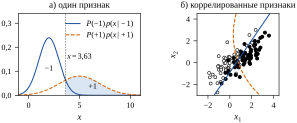

9 Наивный байесовский классификатор
Логистическая регрессия оценивает вероятность класса по признакам объекта напрямую. Есть и другой подход: описать, как выглядят объекты каждого класса, — какие слова встречаются в спаме и какие в обычных письмах, — а затем по формуле Байеса пересчитать это описание в вероятность класса для нового объекта. Наивный байесовский классификатор — простейшая из моделей, построенных по этому принципу. Он обучается подсчётом частот, работает при огромном числе признаков и на малых выборках и служит стандартной базовой моделью для классификации текстов.
9.1 Формула Байеса
Условная вероятность P(A \mid B) — вероятность события A при условии, что событие B произошло. Формула Байеса связывает вероятность класса при известном объекте с вероятностью объекта при известном классе:
P(y \mid x) = \frac{P(y)\, p(x \mid y)}{p(x)}, \qquad p(x) = \sum_{c \in Y} P(c)\, p(x \mid c).\tag{9.1}
Здесь P(y) — априорная вероятность класса, известная до того, как мы увидели объект; p(x \mid y) — правдоподобие, вероятность (для непрерывных признаков — плотность) встретить такой объект среди объектов класса y; P(y \mid x) — апостериорная вероятность класса после наблюдения объекта. Знаменатель p(x) одинаков для всех классов и лишь делает сумму апостериорных вероятностей равной единице.
Пример. Покажем, как формула Байеса связывает частоту класса и частоту признака. Пусть спам составляет 30 % писем, слово «выигрыш» встречается в 40 % спама и в 2 % обычных писем. Какова вероятность, что письмо со словом «выигрыш» — спам? По формуле (9.1)
P(\text{спам} \mid \text{«выигрыш»}) = \frac{0{,}3 \cdot 0{,}4}{0{,}3 \cdot 0{,}4 + 0{,}7 \cdot 0{,}02} = \frac{0{,}12}{0{,}134} \approx 0{,}90.
Слово встречается меньше чем в половине спам-писем, но сдвигает вероятность с 0,3 до 0,9: ключевое значение имеет отношение правдоподобий 0{,}4 / 0{,}02 = 20, а не сама частота встречаемости 0,4.
Два подхода к классификации. Логистическая регрессия (гл. 7) моделирует апостериорную вероятность P(y \mid x) напрямую; такие модели называют дискриминативными — они учатся отличать классы друг от друга. Генеративные модели описывают, как устроены объекты каждого класса: оценивают P(y) и p(x \mid y), а P(y \mid x) получают по формуле Байеса. Генеративная модель знает о данных больше, чем нужно для классификации (из неё можно порождать новые объекты), но платит за это допущениями о виде p(x \mid y).
9.2 Оптимальный байесовский классификатор
Предположим, что распределения P(y) и p(x \mid y) известны точно. Если отнести объект x к классу y, классификатор ошибётся с вероятностью 1 - P(y \mid x). Значит, вероятность ошибки наименьшая, если выбирать класс с наибольшей апостериорной вероятностью. Знаменатель p(x) в формуле (9.1) от класса не зависит, и его можно отбросить:
g(x) = \arg\max_{y \in Y} P(y)\, p(x \mid y).\tag{9.2}
Это оптимальный байесовский классификатор. Если ошибки первого и второго рода (гл. 8) имеют разную цену, выбирают класс с наименьшими ожидаемыми потерями; для двух классов это даёт порог c_-/(c_- + c_+) на апостериорную вероятность класса +1 — тот же, что в гл. 8.
Его ошибка — наименьшая возможная при данных признаках. Она больше нуля, если объекты разных классов бывают одинаковыми по признакам (два письма с одним набором слов, одно — спам, другое нет); такую ошибку не устранит никакое обучение, нужны другие признаки.
На практике распределения неизвестны, и их оценивают по выборке. Вероятность класса оценить легко: P(y) \approx \ell_y / \ell, где \ell_y — число объектов класса y в выборке. С правдоподобием p(x \mid y) дело обстоит сложнее. Пусть у объекта n бинарных признаков, например наличие или отсутствие n слов в письме. Различных объектов 2^n, и для каждого класса нужно оценить вероятность каждого из них. При n = 30 это около миллиарда чисел; большинство сочетаний слов в выборке не встретится ни разу, и их вероятность оценить невозможно.
9.3 Наивное предположение
Наивный байесовский классификатор упрощает задачу допущением: при известном классе признаки независимы. Тогда правдоподобие объекта распадается в произведение правдоподобий отдельных признаков:
p(x \mid y) = \prod_{j=1}^{n} p\bigl(f_j(x) \mid y\bigr).
Вместо распределения на 2^n сочетаниях в каждом классе нужно оценить n одномерных распределений (для бинарных признаков — n чисел), и каждое оценивается по всем объектам класса.
Произведение многих вероятностей становится меньше наименьшего числа, представимого в компьютере: для 1000 слов с вероятностями около 0,001 оно порядка 10^{-3000}, а числа двойной точности не бывают меньше примерно 10^{-324}. Поэтому, как и в гл. 7, переходят к логарифмам:
g(x) = \arg\max_{y \in Y} \Bigl( \ln P(y) + \sum_{j=1}^{n} \ln p\bigl(f_j(x) \mid y\bigr) \Bigr).\tag{9.3}
Читаем формулу. Каждый класс набирает очки: начальный запас — логарифм его априорной вероятности, затем каждый признак вносит свой вклад \ln p(f_j(x) \mid y), больший у того класса, для которого такое значение признака типично. Побеждает класс с наибольшей суммой.
Почему «наивный». Допущение почти всегда неверно: слова «выигрыш» и «бесплатно» в спаме встречаются вместе, рост и вес человека связаны, а значит допущение о независимости признаков не выполняется. Тем не менее классификатор часто работает хорошо. Для верного ответа не нужно, чтобы оценки вероятностей были точными, — нужно только, чтобы у правильного класса сумма в (9.3) была наибольшей, а это выполняется и при заметной зависимости признаков [9]. За это допущение приходится платить точностью самих вероятностей: информацию, общую для нескольких признаков, классификатор учитывает несколько раз, и его оценки получаются слишком близкими к 0 или 1.
9.4 Гауссовский наивный байес
Для непрерывного признака нужно выбрать вид распределения p(f_j(x) \mid y). Обычно берут нормальное:
p\bigl(f_j(x) \mid y\bigr) = \frac{1}{\sqrt{2\pi}\,\sigma_{jy}} \exp\biggl(-\frac{\bigl(f_j(x) - \mu_{jy}\bigr)^2}{2\sigma_{jy}^2}\biggr),
где \mu_{jy} и \sigma_{jy}^2 — среднее и дисперсия признака f_j в классе y. Обучение сводится к их подсчёту по объектам класса y (это оценки максимального правдоподобия из гл. 7).
Пример. Покажем, как выглядит граница между классами. Пусть признак один, класс -1 составляет 60 % выборки, и у объектов этого класса значения признака распределены нормально со средним 2 и стандартным отклонением 1, а у объектов класса +1 (40 % выборки) — со средним 5 и стандартным отклонением 2. На рис. 9.1, а показаны произведения P(y)\, p(x \mid y) — величины, которые сравнивает правило (9.2). Для объекта x = 3 они равны 0{,}6 \cdot 0{,}242 = 0{,}145 и 0{,}4 \cdot 0{,}121 = 0{,}048, и апостериорная вероятность класса +1 равна 0{,}048 / (0{,}145 + 0{,}048) \approx 0{,}25. Кривые пересекаются при x \approx 3{,}63: правее классификатор выбирает класс +1.

Граница проходит не посередине между средними (3,5): сказываются и априорные вероятности, и дисперсии. Есть и вторая точка пересечения, x \approx -1{,}63, где обе кривые почти нулевые: там снова выигрывает класс +1, его распределение шире и на краях убывает медленнее. Причина в том, что логарифм нормальной плотности квадратичен по признаку, и граница между классами квадратичная. Если дисперсии признака в обоих классах одинаковы, слагаемые с f_j^2 при сравнении классов сокращаются, и граница становится линейной.
9.5 Тексты и мешок слов
Чтобы классифицировать тексты, их нужно превратить в признаки. Простейший способ — мешок слов (bag of words, BoW): составляют словарь из n слов, встречающихся в обучающих текстах, и признаком f_j(x) служит число вхождений j-го слова в текст x. Порядок слов теряется — отсюда название. Классификация текстов наивным байесом подробно разобрана в [1].
Мультиномиальный наивный байес считает, что текст класса y порождается так: слова выбираются независимо одно за другим, и слово j выбирается с вероятностью q_{jy}. Тогда правдоподобие текста с точностью до множителя, одинакового для всех классов, равно
p(x \mid y) \propto \prod_{j=1}^{n} q_{jy}^{f_j(x)}:
каждое вхождение слова умножает правдоподобие на его вероятность. Оценка вероятности слова — его доля среди всех слов текстов класса:
q_{jy} = \frac{N_{jy}}{N_y},\tag{9.4}
где N_{jy} — сколько раз слово j встретилось в обучающих текстах класса y, а N_y = \sum_j N_{jy} — общее число слов в них.
Бернуллиевский вариант учитывает только наличие слова, f_j(x) \in \{0, 1\}, и оценивает q_{jy} как долю текстов класса y, содержащих слово j. Правдоподобие \prod_j q_{jy}^{f_j(x)} (1 - q_{jy})^{1 - f_j(x)} учитывает и отсутствие слов: если в письме нет слова, типичного для спама, это довод против спама.
Пример: спам-фильтр. Покажем на примере, как по обучающей выборке вручную вычисляется вероятность класса, и заодно обнаружим проблему нулевых частот. Словарь — четыре слова, обучающая выборка — шесть писем (табл. 9.1), спам — класс +1.
| Письмо | Текст | Класс |
|---|---|---|
| 1 | выигрыш выигрыш бесплатно | +1 |
| 2 | бесплатно выигрыш | +1 |
| 3 | бесплатно встреча | +1 |
| 4 | отчёт встреча | -1 |
| 5 | отчёт отчёт бесплатно | -1 |
| 6 | встреча отчёт | -1 |
P(+1) = P(-1) = 0{,}5. В спаме семь слов: «выигрыш» — 3 раза, «бесплатно» — 3, «отчёт» — 0, «встреча» — 1. В обычных письмах тоже семь: 0, 1, 4 и 2 раза соответственно. По формуле (9.4) вероятности слов в спаме — 3/7, 3/7, 0, 1/7, в обычных письмах — 0, 1/7, 4/7, 2/7.
Классифицируем письмо «выигрыш встреча». Для спама произведение 0{,}5 \cdot \frac{3}{7} \cdot \frac{1}{7}, для обычного письма 0{,}5 \cdot 0 \cdot \frac{2}{7} = 0: слово «выигрыш» ни разу не встретилось в обычных письмах, и вероятность спама получается равной 1. Письмо «бесплатно отчёт», наоборот, получает вероятность спама 0, потому что слова «отчёт» не было в спаме, — хотя «бесплатно» встречается в спаме втрое чаще. Слово, не встретившееся в обучающих текстах класса, перечёркивает вклад всех остальных слов: в сумме (9.3) его слагаемое равно \ln 0 = -\infty. Это проблема нулевых частот.
9.6 Сглаживание Лапласа
Нулевая оценка — следствие малой выборки, а не свойство класса. Сглаживание Лапласа прибавляет к каждому счётчику число \alpha > 0, как будто каждое слово словаря встретилось в каждом классе ещё \alpha раз:
q_{jy} = \frac{N_{jy} + \alpha}{N_y + \alpha n}.
В знаменателе добавлено \alpha n, чтобы вероятности всех n слов по-прежнему давали в сумме единицу. При \alpha = 1 сглаживание называют лапласовским, при 0 < \alpha < 1 — сглаживанием Лидстона. На больших выборках добавка мало меняет частоты частых слов, а редким словам не даёт нулевых оценок.
Применим сглаживание с \alpha = 1 к тому же примеру (n = 4). Знаменатель в обоих классах 7 + 4 = 11; вероятности слов «выигрыш», «бесплатно», «отчёт», «встреча» в спаме — 4/11, 4/11, 1/11, 2/11, в обычных письмах — 1/11, 2/11, 5/11, 3/11. Для письма «выигрыш встреча» произведения равны 0{,}5 \cdot \frac{4}{11} \cdot \frac{2}{11} и 0{,}5 \cdot \frac{1}{11} \cdot \frac{3}{11}, они относятся как 8 : 3. Вероятность спама — доля первого произведения в их сумме, то есть 8/(8 + 3) = 8/11 \approx 0{,}73; совпадение со знаменателем 11 в вероятностях слов случайно. Для письма «бесплатно отчёт» произведения равны 0{,}5 \cdot \frac{4}{11} \cdot \frac{1}{11} и 0{,}5 \cdot \frac{2}{11} \cdot \frac{5}{11}, они относятся как 4 : 10, и вероятность спама 4/(4 + 10) = 4/14 \approx 0{,}29. Вместо категоричных 1 и 0 получились осторожные оценки, учитывающие оба слова. Гиперпараметр \alpha по роли похож на коэффициент регуляризации (гл. 6): чем он больше, тем сильнее оценки стянуты к равномерным, — и подбирают его так же, кросс-валидацией.
Пример: бернуллиевский вариант. Покажем, как на ответ влияет отсутствие слов. Теперь q_{jy} — доля писем класса y, содержащих слово j. Сглаживание прибавляет \alpha к числу таких писем и 2\alpha к числу писем класса (у признака два значения): q_{jy} = (D_{jy} + \alpha) / (\ell_y + 2\alpha), где D_{jy} — число писем класса y со словом j. В табл. 9.1 «выигрыш» есть в двух письмах спама из трёх, «бесплатно» — в трёх, «отчёт» — ни в одном, «встреча» — в одном; в обычных письмах — в 0, 1, 3 и 2. При \alpha = 1 вероятности слов в спаме — 3/5, 4/5, 1/5, 2/5, в обычных письмах — 1/5, 2/5, 4/5, 3/5.
Классифицируем снова письмо «выигрыш встреча». В шансы спама входят все четыре слова словаря: присутствующее — множителем q_{j,+1} / q_{j,-1}, отсутствующее — множителем (1 - q_{j,+1}) / (1 - q_{j,-1}). «Выигрыш» есть: 3; «встреча» есть: 2/3; «бесплатно» нет: (1/5) / (3/5) = 1/3 — довод против спама, ведь в спаме это слово есть всегда; «отчёт» нет: (4/5) / (1/5) = 4 — довод за спам. Шансы спама 3 \cdot \frac{2}{3} \cdot \frac{1}{3} \cdot 4 = \frac{8}{3}, вероятность 8/11 \approx 0{,}73 — здесь случайно та же, что у мультиномиального варианта. Для письма из одного слова «встреча» варианты расходятся. Мультиномиальный учитывает только это слово и даёт шансы 2 : 3, вероятность спама 0,40. Бернуллиевский добавляет вклад трёх отсутствующих слов: шансы \frac{2}{3} \cdot \frac{1}{2} \cdot \frac{1}{3} \cdot 4 = \frac{4}{9}, вероятность 4/13 \approx 0{,}31.
Таким образом, бернуллиевский вариант оценивает письмо и по тому, каких слов в нём нет. При небольшом словаре это помогает, а при словаре из десятков тысяч слов отсутствие отдельного слова почти ничего не говорит, и мультиномиальный вариант обычно точнее [10].
9.7 Наивный байес и логистическая регрессия
Возьмём для мультиномиального наивного байеса логарифм отношения апостериорных вероятностей двух классов — логит из гл. 7. По формуле Байеса
\ln \frac{P(+1 \mid x)}{P(-1 \mid x)} = \ln \frac{P(+1)}{P(-1)} + \sum_{j=1}^{n} f_j(x) \ln \frac{q_{j,+1}}{q_{j,-1}}.\tag{9.5}
Читаем формулу. Справа — линейная функция признаков: свободный член \theta_0 = \ln(P(+1)/P(-1)) и веса \theta_j = \ln(q_{j,+1}/q_{j,-1}). Значит, P(+1 \mid x) = \sigma(h(x, \boldsymbol{\theta})) — модель той же формы, что логистическая регрессия. В примере веса слов «выигрыш», «бесплатно», «отчёт», «встреча» равны \ln 4 = 1{,}39; \ln 2 = 0{,}69; \ln 0{,}2 = -1{,}61; \ln(2/3) = -0{,}41, а \theta_0 = 0. Для текста «выигрыш встреча» h = 1{,}39 - 0{,}41 = 0{,}98 и \sigma(0{,}98) \approx 0{,}73 — тот же ответ. Логит линеен по признакам и в бернуллиевском варианте, и в гауссовском — если дисперсия каждого признака одинакова в обоих классах (иначе, как показано выше, граница квадратичная).
Различаются модели способом нахождения весов. Наивный байес оценивает вес каждого признака отдельно, по частотам в классах. Логистическая регрессия подбирает все веса совместно, максимизируя правдоподобие ответов, и учитывает зависимость признаков. Поэтому наивный байес учитывает одну и ту же информацию дважды: если бы у слова «выигрыш» в словаре был двойник, всегда стоящий рядом с ним (например, если бы в спаме всегда писали «крупный выигрыш», а слово «крупный» отдельно не встречалось), наивный байес сложил бы оба вклада, и вероятность спама для письма «выигрыш встреча» выросла бы с 0,73 примерно до 0,91, хотя информации не прибавилось; логистическая регрессия разделила бы вес между двойниками.
На рис. 9.1, б признаки x_1 и x_2 сильно коррелированы в обоих классах (коэффициент корреляции 0,8), а классы различаются тем, что у класса +1 (чёрные точки) x_1 больше при том же x_2. Наивный байес считает оба признака независимыми доводами в пользу класса +1 и проводит границу поперёк облака точек. Логистическая регрессия нашла веса 3{,}0 и -2{,}0: при фиксированном x_1 большое x_2 говорит против класса +1. На 100 000 новых объектов из тех же распределений доля правильных ответов наивного байеса 0,74, логистической регрессии — 0,83.
Зато наивный байес выигрывает при малых выборках: он приближается к своей наилучшей ошибке уже при числе объектов, растущем логарифмически с числом признаков, тогда как логистической регрессии нужно число объектов порядка числа признаков; при большой выборке логистическая регрессия обычно точнее [11].
Итак, достоинства наивного байеса: обучение — один проход по выборке
с подсчётом частот, без оптимизации, и дообучение на новых данных —
прибавление к счётчикам; работа на малых выборках и при десятках тысяч
признаков; пропущенный признак просто не участвует в сумме (9.3). Недостатки: зависимость признаков не
учитывается; для непрерывных признаков приходится угадывать вид
распределения; вероятности излишне уверенные — по метрикам гл. 8 AUC,
зависящая только от порядка оценок, бывает высокой, а log-loss плохой.
Если нужен не только класс, но и правдоподобная оценка вероятности —
например, чтобы рассчитать по ней ожидаемые затраты, как в гл. 8, —
оценки калибруют: подправляют так, чтобы среди объектов с
оценкой около 0,8 к классу +1
действительно относилось около 80 %. В scikit-learn для этого служит
класс CalibratedClassifierCV.
В scikit-learn описанные в этой главе виды наивного байесовского
классификатора реализованы в классах GaussianNB,
MultinomialNB и BernoulliNB модуля
sklearn.naive_bayes; параметр alpha —
коэффициент сглаживания (по умолчанию 1). В листинге 9.1 — спам-фильтр
из примера выше; мешок слов строится с помощью класса
CountVectorizer.
Листинг 9.1. Мультиномиальный наивный байес для текстов
from sklearn.feature_extraction.text import CountVectorizer
from sklearn.naive_bayes import MultinomialNB
from sklearn.pipeline import make_pipeline
texts = ["выигрыш выигрыш бесплатно", "бесплатно выигрыш",
"бесплатно встреча", "отчёт встреча",
"отчёт отчёт бесплатно", "встреча отчёт"]
y = [1, 1, 1, 0, 0, 0] # 1 — спам
model = make_pipeline(CountVectorizer(),
MultinomialNB(alpha=1.0))
model.fit(texts, y)
model.predict_proba(["выигрыш встреча"]) # [[0.27, 0.73]]Вопросы для самоконтроля
- Что такое априорная и апостериорная вероятности и правдоподобие в формуле Байеса?
- Чем генеративная модель отличается от дискриминативной? К какому типу относятся логистическая регрессия и наивный байес?
- Почему ошибка оптимального байесовского классификатора может быть больше нуля?
- В чём состоит наивное предположение? Зачем оно нужно?
- Чем мультиномиальный вариант отличается от бернуллиевского?
- Какую проблему решает сглаживание Лапласа?
- Почему вероятности наивного байеса бывают излишне уверенными?
Задачи
Болезнь встречается у 1 % людей. Тест обнаруживает её у 90 % больных и ошибочно даёт положительный результат у 5 % здоровых. Какова вероятность болезни при положительном тесте?
Ответ
0{,}009 / (0{,}009 + 0{,}0495) \approx 0{,}15: здоровых намного больше, и большинство положительных результатов ложные.
В примере со спам-фильтром (с \alpha = 1) найдите вероятность спама для письма «бесплатно бесплатно встреча».
Ответ
h = 2 \ln 2 + \ln(2/3) \approx 0{,}98 (веса слов «бесплатно» и «встреча»), вероятность 8/11 \approx 0{,}73.
Признак распределён нормально с дисперсией 1 в обоих классах, со средним 0 в классе -1 и 4 в классе +1. Найдите границу при P(-1) = 0{,}8, P(+1) = 0{,}2.
Ответ
из \ln 0{,}8 - x^2/2 = \ln 0{,}2 - (x - 4)^2/2 получаем x = 2 + \ln 4 / 4 \approx 2{,}35: граница сдвинута к редкому классу.
Объекты описаны 20 бинарными признаками, классов два. Сколько вероятностей нужно оценить для правдоподобия без допущения о независимости и с ним?
Ответ
2 \cdot (2^{20} - 1) \approx 2{,}1 млн и 2 \cdot 20 = 40.